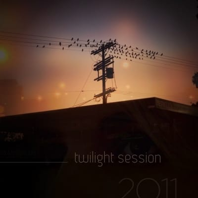

А восьмой сезон "Друзей" еще круче семи предыдущих. Особенно, если смотреть на английском :)

Блин, чувак такой клевый сет заделал!! И мой любимый трек вначале! Круть!!!
Я это видео уже раз 30 посмотрел :)

Блядь, какая офигенная у меня голова!!!

После "101 Things I learned In Architecture School" мне захотелось прочитать про архитектуру что-нибудь еще. Этим "чем-нибудь" оказалась книжка Стина Расмуссена (Steen Rasmussen) "Experiencing Architecture", название которой можно, наверное, перевести как "Познавая архитектуру".Книжка оказалось именно тем, что я от нее и ожидал — эдаким путеводителем по основным моментам в архитектуре (форме, пропорциям, ритму, свету, цвету и т.п.) с кучей часто очень интересных примеров. В общем, очень познавательно — рекомендую!
— Ты чего молчишь? — Не знаю, сейчас мне хочется помолчать. Я и так много разговариваю. — А мне нравится, когда ты говоришь. Она сидела у стены, опустив ноги в воду и смотрела на заходящее солнце. — О чем говорю? — Не знаю, о чем угодно. Мне просто нравится, когда ты говоришь. Я помолчал еще немного, потом спустился со стула и присел рядом с ней. — А мне нравится, когда ты меня слушаешь. Может быть поэтому я и говорю так много. — Да, наверное... Расскажи мне про себя? — Что рассказать? — Не знаю, расскажи что угодно.
И, словно маленькая любопытная рыбка, она ткнулась носом в мое плечо.
— Какой у тебя вид из окна! — Да, вид, что надо, а если приглядеться, то можно даже увидеть кусочек моря. — А услышать его можно? — Услышать, думаю, нет, но если закрыть глаза, то ты сможешь его почувствовать. — Море? — Да, море.
Она улыбается и закрывает глаза.
Ветер пробегает по ее волосам, и на долю секунды мне кажется, будто я слышу как шумит вдалеке море.
Продолжение. Начало здесь.

Давно не смотрел такого приятного отечественного кино :)